Participant 1: The Moon and Sixpence
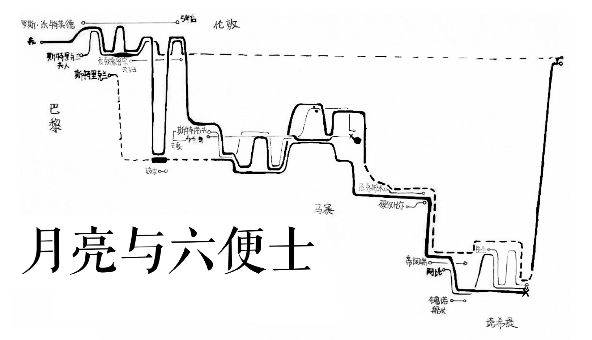
Actor
- Dashed Line: to indicate the existence of characters.
- Curved Line: to reveal the movement of characters (e.g. traveling among cities).
- Line with Symbol: to emphasize significant events of characters (e.g. death).
Structure
- Uniform-Timeline: to follow the actual timing of events in the story.
- Location: to represent different locations using Y-axis.
Participant 2: Train to Busan
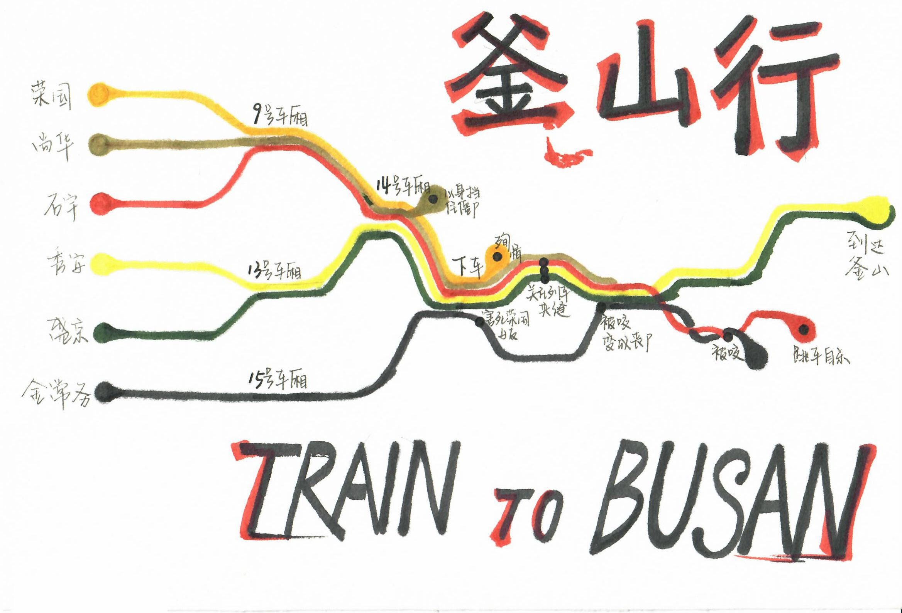
Actor
- Curved Line: to show the escaping of characters (chased by zombies).
- Line with Symbol: to present events associated with characters.
Relationship
- Merge/Split: to group characters who are running togethor.
- Twine: to present the fighting between characters.
Structure
- Uon-Uniform Timeline: to emphasize significant events.
Decoration
Color: to present the personality of characters and their relationships.
Participant 3: The Matrix
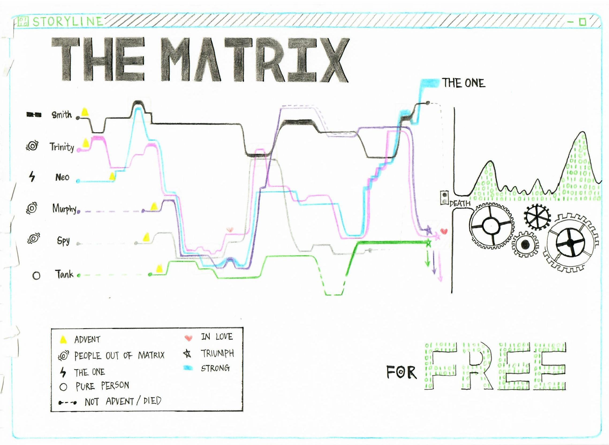
Actor
- Dahsed Line: to present different states of characters.
- Curved Line: to represent the change of emotion of characters.
- Line with Symbol: to represent states or endings of characters.
Relationship
- Twine: to present the fighting between characters.
- Order: to seperate characters from different worlds.
Structure
Non-Uniform: to emphasize some significant events.
Decoration
Color: to present the personality of characters.
Participant 4: People from the Moon
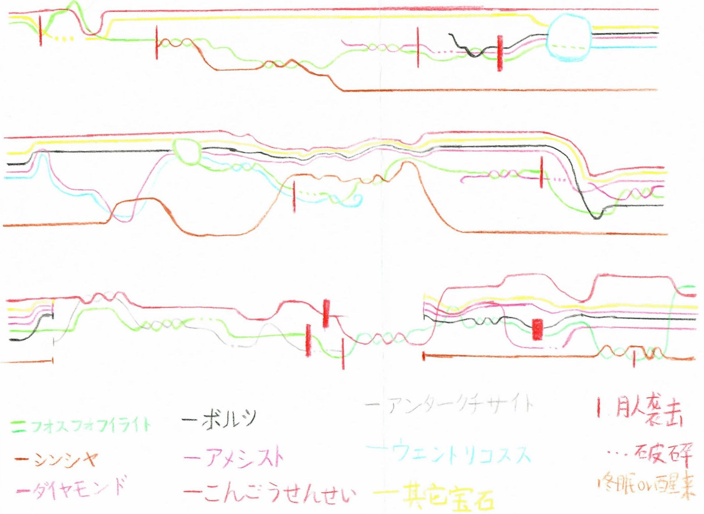
Actor
- Dahsed Line: to represent different states of characters (e.g. collapsed or alive).
- Curved Line: to present the fighting events.
- Line with Symbol: to indicate the endings of characters.
Relationship
- Twine: to present the fighting between characters.
- Connect: to indicate characters in the same event.
Structure
Segment Timeline: to present stories that occur in different places meanwhile.
Decoration
Color: to present the personality and its change of characters.
Participant 5: Naruto
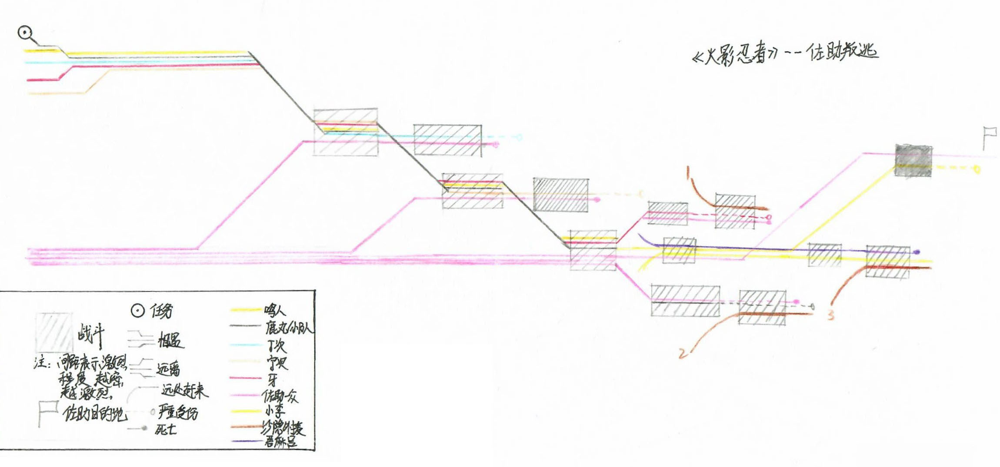
Actor
- Line with Symbol: to present different endings of characters.
Relationship
- Merge/Split: to group characters from different parties.
Plot & Event
Step: to show the overall plot that one group characters chase another group characters.
Decoration
Color: to show the identification of characters.
Participant 6: Hello, Old Time
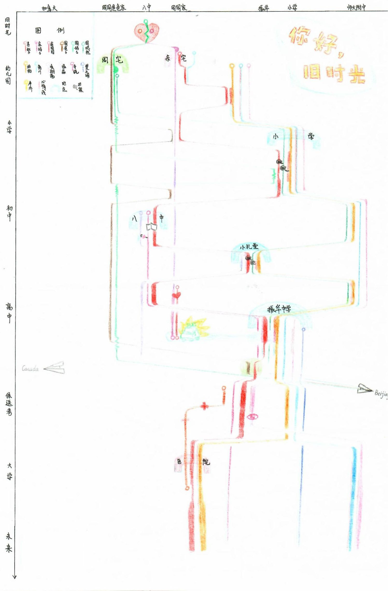
Relationship
- Connect: to indicate that some events occured between characters (e.g. loving).
Structure
- Non-Uniform Timeline: to emphasize different events.
- Location: to present different locations using Y-axis.
Participant 7: Jane Eyre
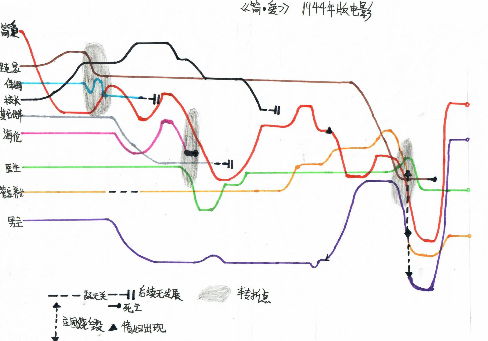
Actor
- Dahsed Line: to indicate that a character do not appear in the plot.
- Curved Line: to indicate the changes of characters' emotion.
- Line with Symbol: to present endings or significant events of characters.
Relationship
- Connect: to connect characters in the same event.
Plot & Event
- Shape: to emphasize significant events.
Structure
Non-Uniform Timeline: to exaggerate the distribution of events.
Participant 8: Sword Art Online
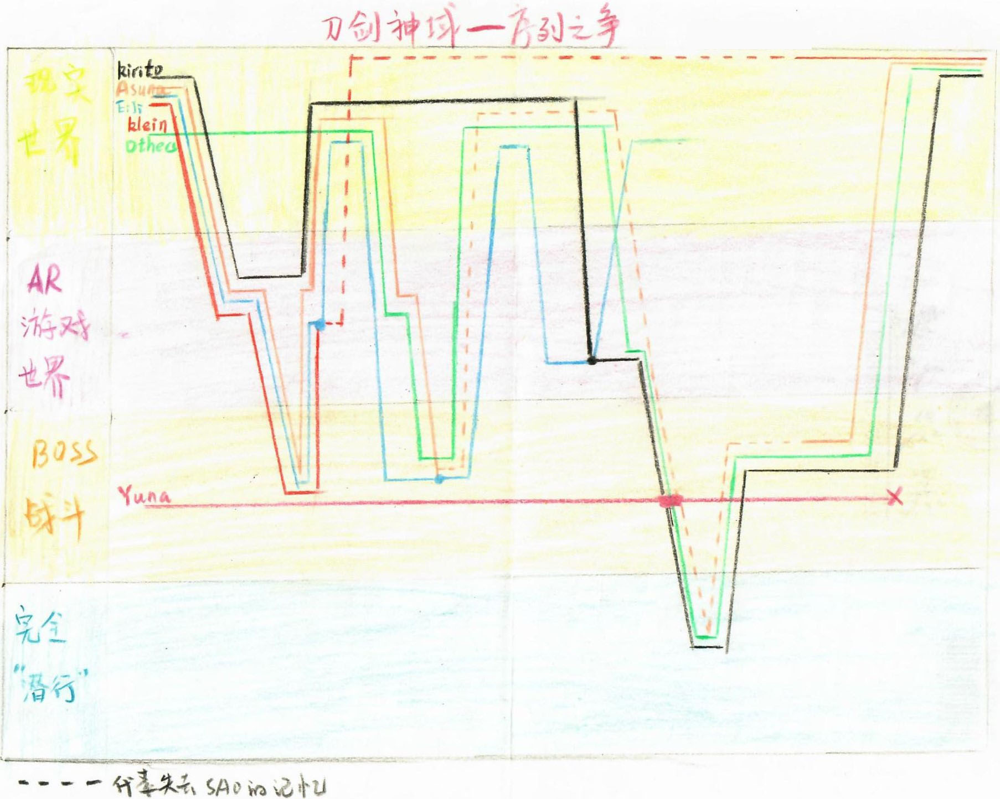
Actor
- Dashed Line: to indicate that a character lost his memory.
- Line with Symbol: to emphasize events or indicate endings of characters.
Structure
Location: to present locations using Y-axis.
Decoration
Color: to present different worlds.
Participant 9: Narnia
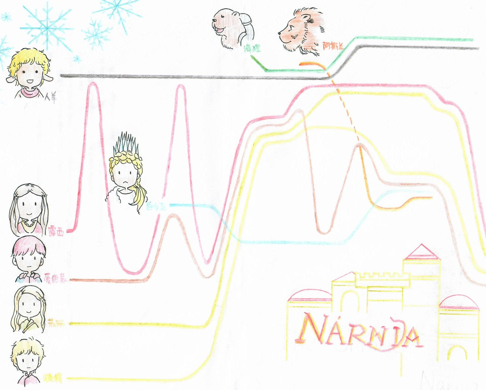
Actor
- Dahsed Line: to indicate the state of a character.
- Curved Line: to indicate when characters enter/leave Narnia.
Relationship
- Order: to separate characters from different worlds.
Plot & Event
- Fluctuation: to describe the plot that characters enter/leave Narnia.
Decoration
- Color: to show the personality of characters.
- Image: to identify characters.
Participant 10: Monster Hunt
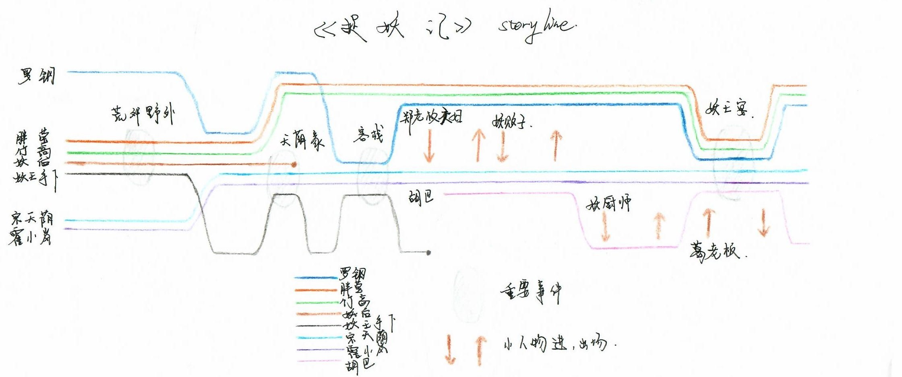
Actor
- Line with Symbol: to indicate the ending of a character.
Relationship
- Connect: to indicate the enter/leave of minor characters.
Plot & Event
- Shape: to present events.
Participant 11: Wukong
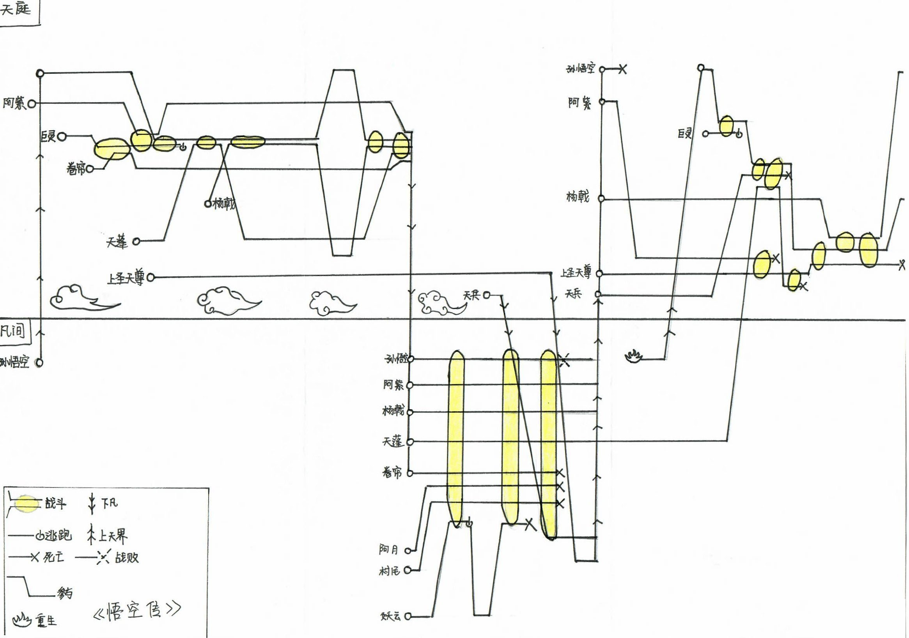
Actor
- Line with Symbol: to present the endings of characters and show the type of movement.
Relationship
- Merge/Split: to present a group of characters.
Plot & Event
- Fluctuation: to describe the plot that characters enter another world to fight and come back.
- Shape: to present events.
Participant 12: Inception
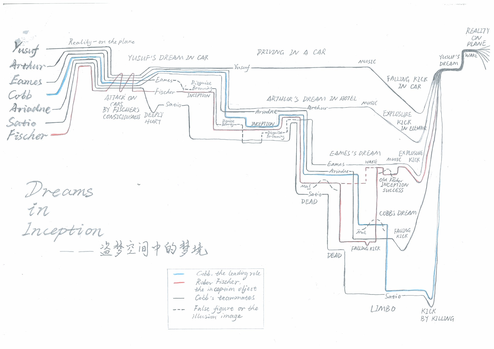
Actor
- Dashed Line: to present false figure or illusion image.
- Curved Line: to indicate that characters move to another place.
Relationship
- Merge/Split: to indicate that characters move togethor.
Plot & Event
- Step: to indicate that the plots occured in different dreams.
Participant 13: The Three Kingdoms Era
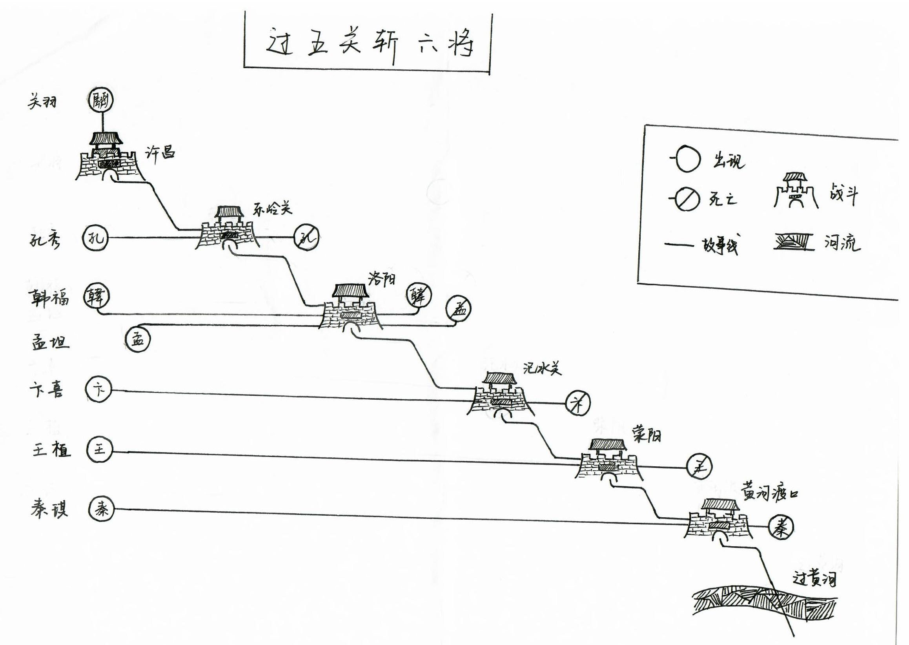
Actor
- Line with Symbol: to present the beginning/ending of characters.
Plot & Event
- Step: to present the plot that occured in different places.
Structure
- Location: to present locations using Y-axis.
Decoration
Image: to identify different locations.
Participant 14: World Amazing Words
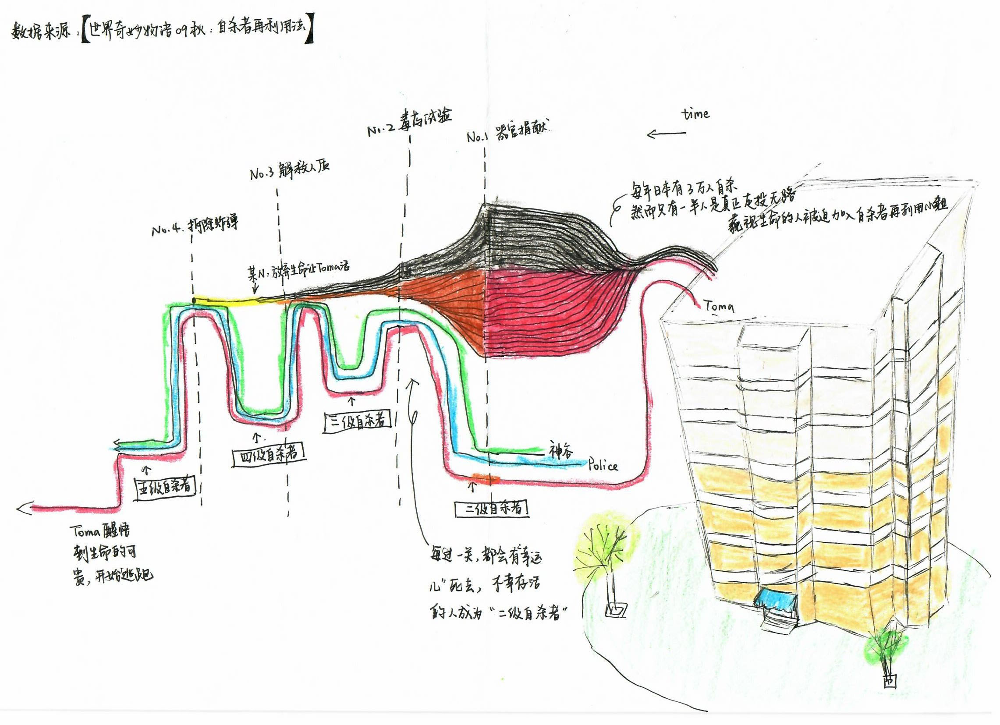
Actor
Line with Symbol: to indicate the direction of movement of characters.
Relationship
Merge/Split: to simplify and group the minor characters.
Plot & Event
- Fluctuation: to indicate that characters enter the next-level worlds.
Decoration
- Image: to present the background of the story.